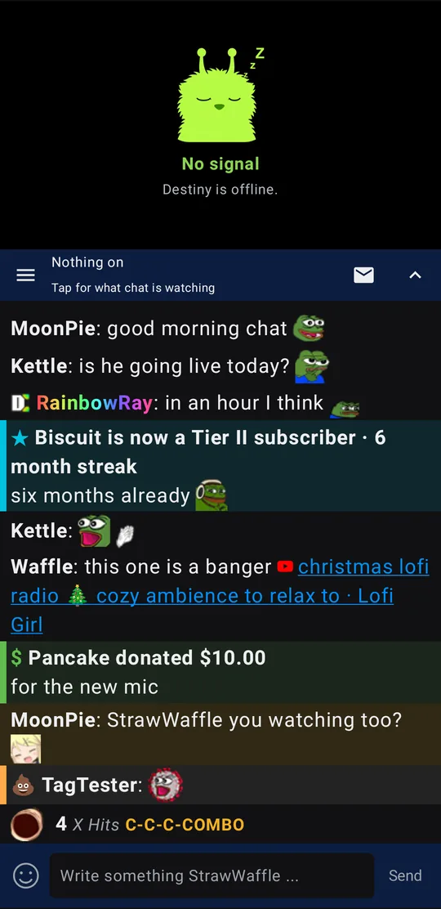
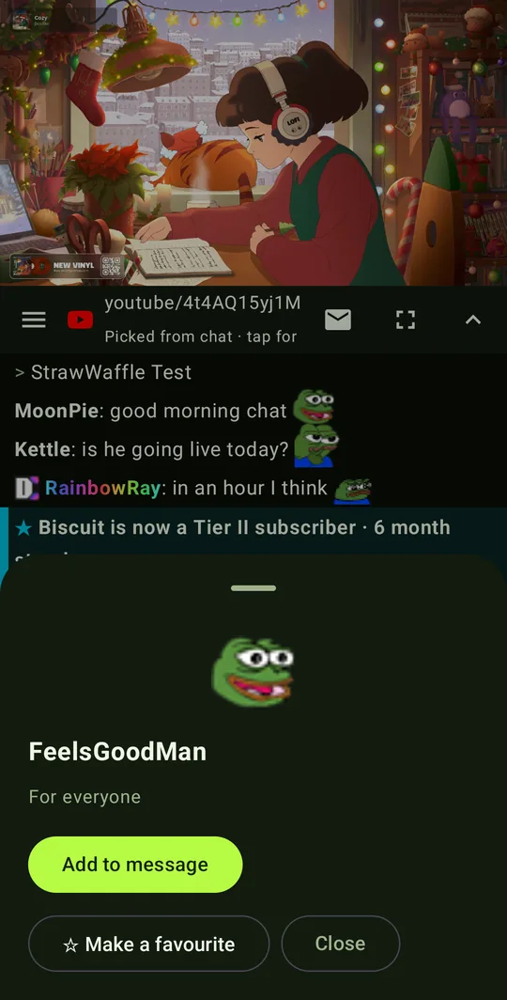

Glorp
destiny.gg chat and bigscreen on your Android phone. Chat works the way it does on the site, streams play in Android's own video player, and there are a few extras the site doesn't have.
Free, for Android 8 or newer. A community app. Neither destiny.gg nor Destiny makes it.





Everything chat does on the site
Glorp follows chat-gui, destiny.gg's own chat code, so chat looks and behaves the way it does in a browser.
- Emotes move the way they do on the site, with their colour changes, glows and the extras drawn over them, like BibleThump's tears. Glorp reads the site's own emote stylesheet and is tested frame by frame against it. Combos count up and end with C-C-C-COMBO. Flairs colour names, and Tier 5 names get the moving rainbow.
- Mentions, highlight words, tags with notes, the ignore list and timestamps all work.
- Whispers have their own conversations, with history.
- You can vote in polls. The pinned message and spotlighted messages show.
- Subscriptions, gifted subs, donations, deaths, posts from X and the Vestaboard show up in chat.
- Messages from muted and banned users get censored, and NSFW and NSFL messages can be hidden.
- The site's commands work,
/stalk,/mentionsand/tagincluded. The input suggests emotes, names and commands as you type. - Tapping a name, the sender's or one in a message, opens that person's membership card: photo, team, tier, standing, biography and, on the back, their signature.
- Tapping a link shows its preview. Tapping an emote shows who made it and lets you favourite it. Hold it there to see what it does when pointed at on the site.
- Signed in from a computer, your chat settings follow your account and the site sees what you're watching.
Better on a phone
- Kick, Twitch, YouTube and AngelThump play in Android's own player, with a quality menu, picture in picture and sound with the screen off. On Kick it sits about 4 seconds behind live.
- Notifications tell you when Destiny goes live, when someone mentions you, and when you get a whisper, without chat open. Mentions come from polecat.me's chat logs, so any sign-in works.
- Before you send, Glorp warns you if the message would hit a nuke, mutelinks or a banned phrase. While one is on, a warning triangle sits at the top left of chat.
- Chat log search from rustlesearch.dev, every message that ever mentioned you from polecat.me, the poll archive and movie nights are built in.
- YouTube and Rumble links in chat show their titles.
- Busy chat stays smooth. Chat only stays connected while Glorp is on screen, and only the rows you can see get drawn.
- Glorp updates itself. Menu → Report a problem opens a GitHub issue with the details filled in.
Glorp's own
- Five themes: Glorp's green in dark and light, destiny.gg's own, and Aerith's light and dark with her round buttons and glowing input.
- Emoji name icons, a private tag only you see.
- Chat from people watching other streams, dimmed like the site's eye button or hidden.
- Your choice of text size, and of your phone's font or the site's.
- Your latest mention stays at the top until you close it, and your own alert words warn you before sending.
- You pick which platform plays Destiny when he's live on several.
- Test versions, which install as Glorp Probe, for anyone who wants to try what's next.
Install
On your phone, download the APK from the latest release and open it. Android asks once to let your browser install apps.
Or add
https://github.com/StrawWaffle/glorpto Obtainium.After that, Glorp offers new versions at the top of its menu.
Signing in
destiny.gg's login page can't run inside an app, because Twitch, Kick and Google block sign-in there. Glorp signs in two other ways.
- Sign in from a computer to get everything. Copy two values from your browser into Glorp's sign-in page and scan the code it shows. The page sends nothing anywhere.
- Paste a login key from your account's developer page to chat and whisper.
Glorp keeps your login on your phone, encrypted.
Problems and ideas
In Glorp, Menu → Report a problem writes a GitHub issue with the details filled in. No GitHub account? Whisper StrawWaffle in destiny.gg chat. Ideas are welcome the same way, or as an idea on GitHub.